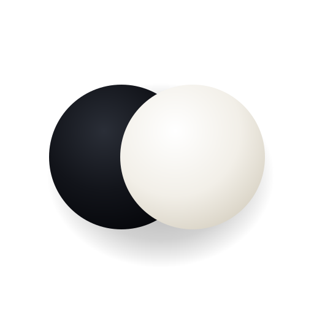

¿Qué es el Go?
El Go (Baduk, Weiqi) es un juego de tablero para dos jugadores: negras y blancas colocan piedras por turnos sobre las intersecciones de una cuadrícula. El objetivo es controlar más territorio que el rival.

Juega y practica Go sin conexión, sin cuentas y sin distracciones.
Un resumen breve para empezar a jugar hoy mismo.
El Go (Baduk, Weiqi) es un juego de tablero para dos jugadores: negras y blancas colocan piedras por turnos sobre las intersecciones de una cuadrícula. El objetivo es controlar más territorio que el rival.
Al final de la partida, gana quien tenga más territorio: intersecciones vacías rodeadas exclusivamente por sus propias piedras, más sus piedras en el tablero (reglas chinas).
Cada piedra tiene libertades: las intersecciones vacías adyacentes (arriba, abajo, izquierda, derecha). Las piedras del mismo color unidas forman un grupo y comparten sus libertades.
Cuando un grupo pierde su última libertad, se retira del tablero. Las piedras capturadas se cuentan como puntos para quien las capturó.
Un grupo con una sola libertad está en atari: a punto de ser capturado. Puedes salvarlo escapando o capturando primero.
La regla del ko impide repetir inmediatamente la posición anterior. Si capturas una piedra de ko, tu rival no puede recapturar de inmediato: debe jugar en otro sitio primero.
Una intersección vacía es tu territorio si todas las piedras que la rodean son tuyas. Si la tocan ambos colores, es neutral (por ejemplo en un seki).
Cuando los dos jugadores pasan seguidos, la partida entra en fase de puntuación. Marca las piedras muertas y confirma. En esta versión se usa el recuento chino de área.